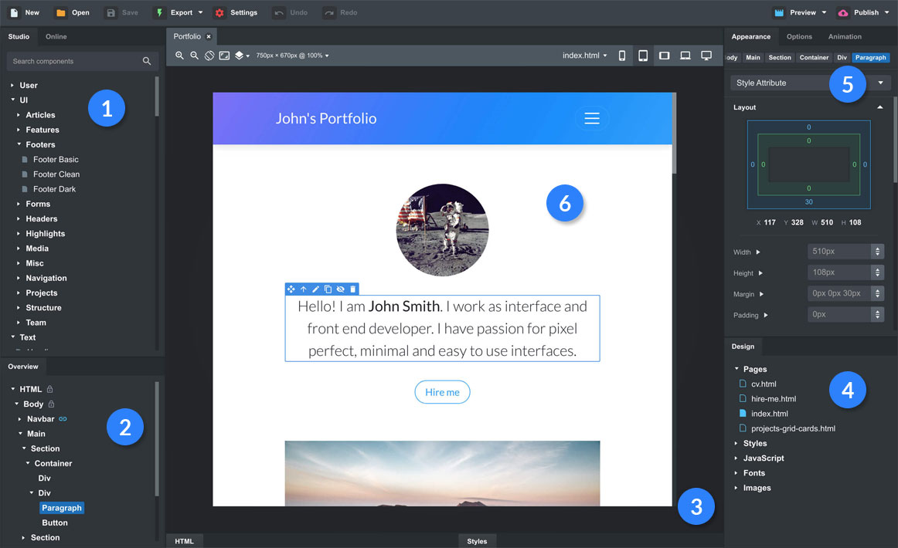
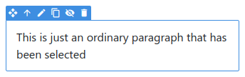

This is a quick guide that will explain the basics of designing websites with Bootstrap Studio.
1 The Application Window

The Bootstrap Studio window is organized around a number of functional areas:
Component panel – it consists of a Studio and Online tabs. Holds all available components which you can drag and drop onto the Stage (6) and the Overview (2).
Overview panel – It gives you a quick overview of all components on the page.
Editor panel – contains HTML and Styles tabs. You can click to expand it, and detach it as a separate window.
Design panel – holds all pages, CSS, SASS, JS files and images of your design. When double clicked, pages are opened in the Stage (6) and other assets - in the Editor panel (3).
Settings panel – consists of 3 tabs (Appearance, Options and Animation), which allow you to customize the selected component.
The Stage – this is where you see a preview of the page, drag and drop components and edit text.
2 Selecting Components
Select components by clicking them. You can tell a component is selected by the blue outline around it, and the quick action bar above:

This is what a selected paragraph looks like.
With these actions you can move the item, edit its text, duplicate and hide it. Keep in mind that not all actions are available on every component. For example text editing isn't shown on images.
Tip: You can hold the Shift/Ctrl/Cmd buttons while clicking, to select multiple components at once. This lets you edit their options at the same time.
When a component is selected, the Settings panel on the right is updated. This is the place where you can modify the styling of the component and change various options.
The Options panel displaying settings for the paragraph.
There are three tabs in the Settings panel - Appearance, Options and Animation. The settings that are available in these three tabs give you a great deal of control over the design and behavior of components.
One thing to keep in mind, is that some of Bootstrap's components are actually made out of others, like this dropdown:
If you attempt to select it, you will actually select the Button inside it. If you wish to see the options of the Dropdown, you need to go one component up. This is easy to do by clicking the "Up" button ( ) on the selected component, or the entry in the breadcrumbs bar, displayed at at the top of the Settings panel:
3 Editing Text
Some elements like paragraphs, spans and buttons can be edited within a rich text editor. You can make text bold,italic, underlined, add links and more.
Just double click an element to edit its content, or press the pencil button ( ) when the component is selected.
Tip: You can press the Enter key while an element is selected to start editing it, Ctrl+D/Cmd+D to duplicate and Delete to remove it. There is a list of supported keyboard shortcuts on our website.
4 Drag and Drop
When an element is selected, you can grab it by the move handle ( ) to drag and drop it into other components.
Some elements like the HTML and Body are locked and can't be moved (you can recognize them by the small padlock in the Overview panel). This is done so that you don't break the page by mistake.
Bootstrap Studio knows where components can be dropped and automatically adds CSS classes and other attributes that the Bootstrap Framework expects. You don't even have to think about it.
Tip: You can drag from the Stage and drop components on the Overview panel for greater precision.
5 Components
There is a large number of components available to you. You can see them in the Studio tab. All standard Bootstrap components are supported, and even basic HTML elements like span, div, section and more.
Components are organized into collapsible groups - Text, Image, Forms etc. You also have a special User group, where you can place components which you create yourself. This is a good way to extract pieces of your designs which you need often. We will cover this in the Custom Components tutorial.
The Online tab holds a large number of community contributed components like headers, footers, pricing tables and more, which you can search and download. When installed, they will appear in the Downloaded group.
6 Opening and Saving
The documents that you create in Bootstrap Studio are referred to as Designs. You can open them and save them as files with the .bsdesign extension.
Double clicking one of these files in your file manager will open them in Bootstrap Studio. You can duplicate designs and work on multiple versions at once.
Tip: The application makes periodic backups, so you can restore your work in case of trouble. Click the File > Backups menu to restore.
You're Ready to Rock and Roll!
You now know enough to create your first web page! There are quite a few powerful features that we haven't mentioned. You can learn about them by checking the tutorials on our website or by visiting the forum. Have fun!

 ) on the selected component, or the entry in the breadcrumbs bar, displayed at at the top of the Settings panel:
) on the selected component, or the entry in the breadcrumbs bar, displayed at at the top of the Settings panel: 
 ) when the component is selected.
) when the component is selected.  ) to drag and drop it into other components.
) to drag and drop it into other components.